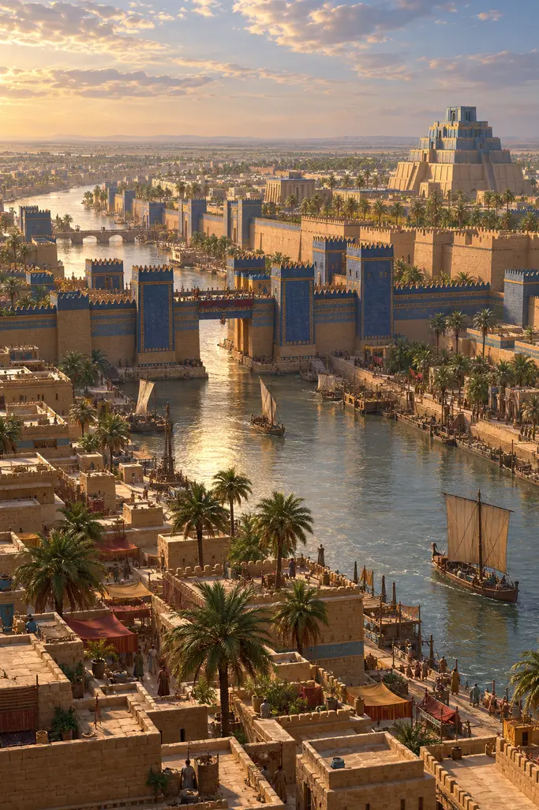
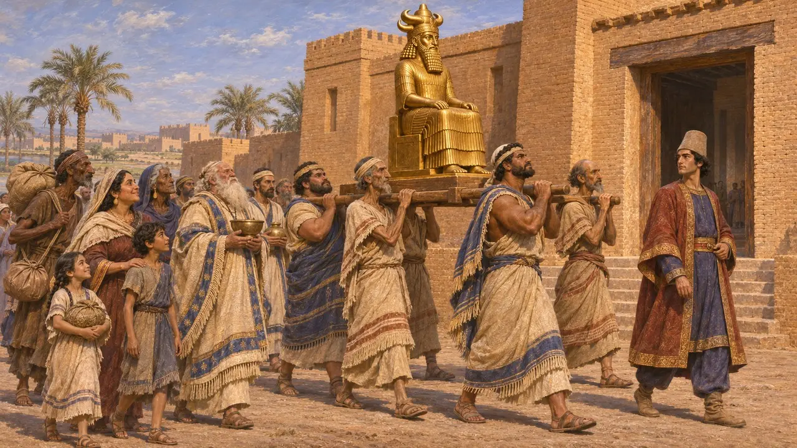
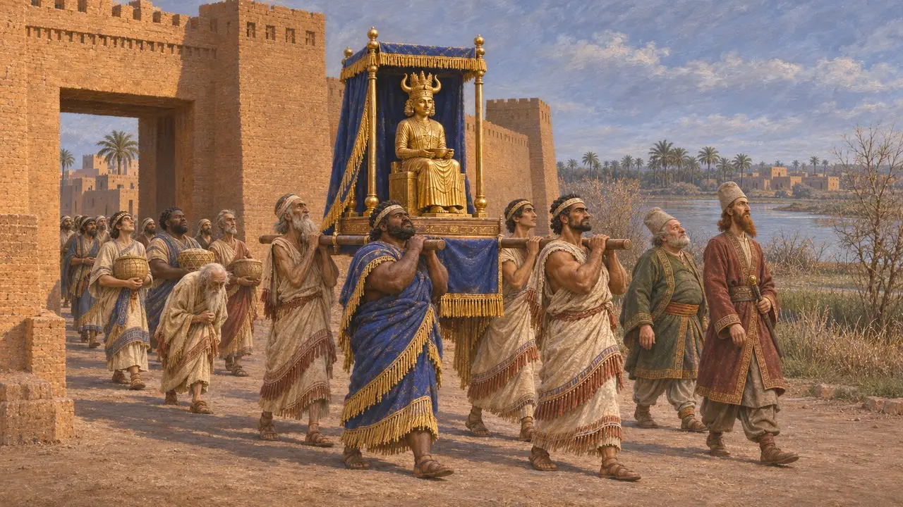
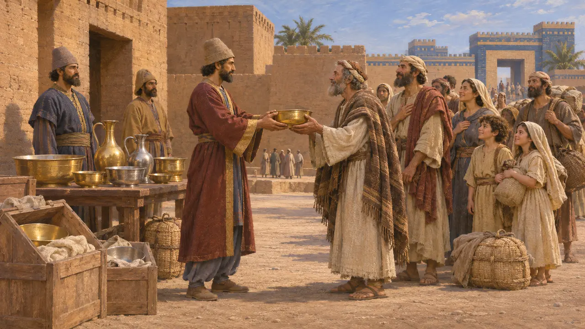
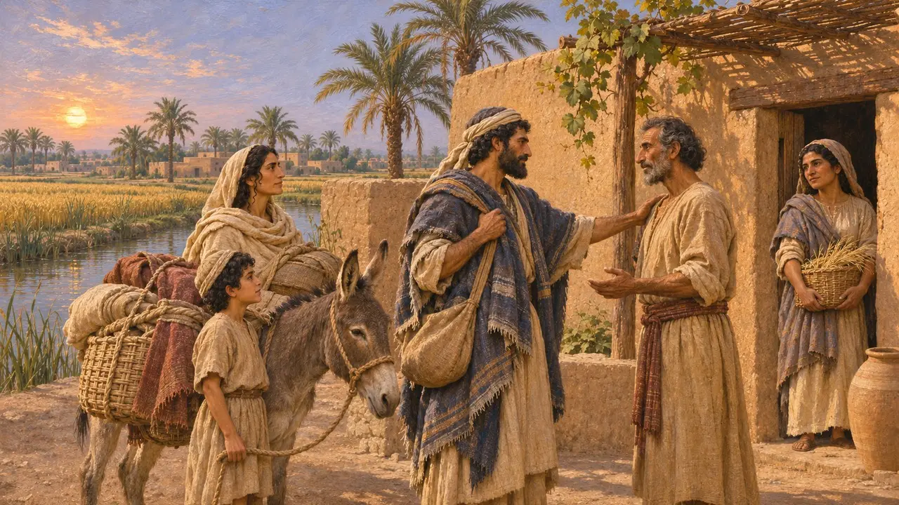
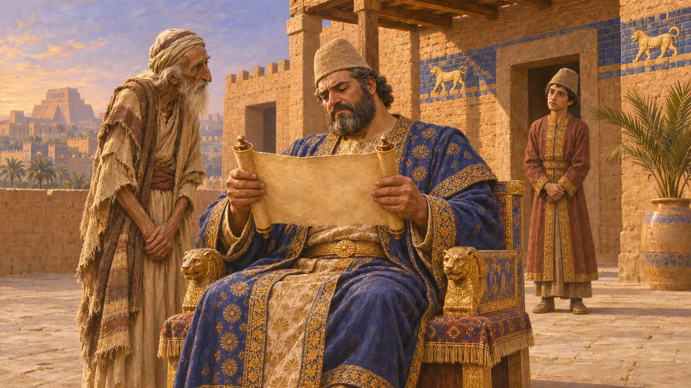

キュロスによる捕囚民の帰還
キュロスによるバビロン占領後の神々と諸民族の復興、紀元前539〜538年
紀元前539年にバビロンを奪ったのち、キュロスは市内に集められていた神像をそれぞれの故郷の神殿に送り返し、自らの記すところによれば、それらの町の住民も故郷へ帰らせた。ヘブライ語聖書は、これとは別の勅令を伝えている。それはユダヤの人々に帰還とエルサレムの神殿再建を許すものであった。これらによってキュロスは復興者として知られるようになったが、証拠が示す実像は、後世の名声が思わせるよりも、地域的で政治的なものである。
ゲームでは： 本作はこれを、円筒碑文とエズラ記1章に記された、強制移住させられた全民族に向けた一つの勅令として示す。だが実際には、円筒碑文が挙げるのはメソポタミアと国境の都市であってユダではなく、エズラ記は別の、より後の文書である。

キュロスの円筒碑文の語ること
同時代の記録1879年にバビロンで発見され、現在は大英博物館にあるこの粘土の円筒は、キュロスが市に入った直後にバビロニアの楔形文字で記された。それによれば、キュロスはアッシュル、スーサ、デールをはじめ、ティグリス川の向こうの諸都市の神々をその聖域に戻し、かつての住民を集めて故郷へ送り返した。また、ナボニドゥスがバビロンに運び込んでいたシュメールとアッカドの神々も、それぞれの神殿に戻したという。
Cyrus Cylinder, lines 30-34

バビロニア年代記
同時代の記録ナボニドゥス年代記は、ナボニドゥスの治世とその終わりを簡潔に記したバビロニアの記録である。それによると、ナボニドゥスがバビロンに連れ下ろしていたアッカドの神々は、キスリム月とアッダル月のあいだ(おおよそ紀元前539年12月から紀元前538年3月)に、それぞれの都市へ戻った。ナボニドゥスは、ペルシア軍の進撃に際して、おそらく神像を守るためにバビロンへ集めていた。神像の返還は敬虔さを示す行為であると同時に、直前の緊急措置を元に戻すものでもあった。
Nabonidus Chronicle (ABC 7), column iii

エズラ記の勅令
古代の記述出来事のずっと後に書かれた『エズラ記』によれば、キュロスは即位の第1年に、ユダヤ人はエルサレムへ上って自らの神の家を再建してよいと布告し、ネブカドネザルが奪った神殿の祭具を返還した。アラム語による第二の伝承は、後にエクバタナで見つかった覚書として示され、神殿の規模と王家の資金供与を記している。キュロスの時代に近い頃に成立したとみられる『イザヤ書』45章は、彼を主に油を注がれた者と呼んでいる。
Ezra 1.1-11; Ezra 6.3-5; Isaiah 45.1

この政策はどこまで一般的だったか
係争中エズラ記の勅令が本物かどうかについて、歴史家の意見は分かれる。ヘブライ語の勅令は後代の著者が書き直したものと考える者が多く、アラム語の覚書のほうが実際のペルシアの文書に近いと判断されることが多い。円筒碑文はメソポタミアの伝統的な文書様式に沿っており、キュロスの支配を正当化するためにナボニドゥスを攻撃するもので、権利の憲章ではない。アル・ヤフドゥの粘土板は、多くのユダヤ人が何世代にもわたってバビロニアに留まったことを示しており、帰還があったとしても徐々に進んだのだろう。
A. Kuhrt, The Persian Empire, 2007; L. Pearce and C. Wunsch, Documents of Judean Exiles, 2014

キュロス、預言者の書を読む
後世の伝説西暦1世紀後半に著したヨセフスは、キュロスが、神殿を再建する者として自分の名を挙げたイザヤの預言を読み、それを成就させようと心を動かされたと伝えている。この話は、ペルシアの政治的な行為を神の予見の証しへと変えてしまう。ペルシアにもバビロニアにも、そのようなことを述べる史料は存在しない。
Josephus, Jewish Antiquities 11.1
出典
- Cyrus Cylinder (British Museum)
- Nabonidus Chronicle (ABC 7)
- Ezra 1 and 6
- I. Finkel (ed.), The Cyrus Cylinder, 2013
- A. Kuhrt, The Persian Empire, 2007
- P. Briant, From Cyrus to Alexander, 2002